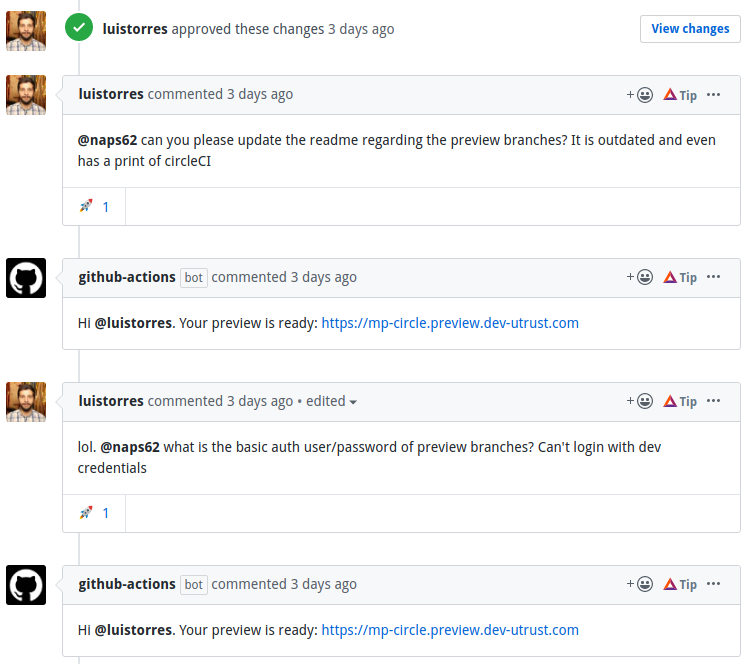

Continuous Stuff with GitHub Actions
- 1836 words
- 10 min
This post was originally posted on my company's blog. Feel free to check out the original
Last year, I took on the task of improving the continuous process over at Utrust. We weren't really happy with the amount of work that went into our releases, and I was looking for a more agile approach, where everyone from developers to the QA team could do their part with low friction.
Coincidentally, that project started right around the same time GitHub Actions went into public beta. Some of our problems were related to shortcomings on our existing CI solution, so it felt right to see what GitHub had to offer.
I ended up pleasantly surprised. But first, let's talk about what exactly was wrong with our previous CI.
Shortcomings of traditional CIs
I've worked with a fair amount of CIs over the years...

There was always something that seemed a bit off, though. They all do one simple, but very useful, thing: they react to commits
The main use case for this is the now common one: to run tests for every new version of your code. But any kind of automated task can be triggered, really. A deploy is very common as well, or a preview build for testing.
But a lot of these automations shouldn't necessarily need a commit. They are not triggered by changes in the code. Deploys might be triggered by some higher-level decision, or a QA team manually approving the latest version, which was committed days ago.
Not everything is a commit
This led to the common practice of creating "special" ways to trigger these commits. In CircleCI, for example, you'd do something like this:
workflows:
build:
release:
- deploy_to_staging:
filters:
branches:
only:
- staging
With this, commits to the staging branch would trigger a deploy to staging. Seems simple enough. But now you need
a branch for every single environment. And probably quite a few push -f commands, or similar git sorceries to force
a commit from your normal workflow into a branch whose history is messier than the plot of Primer.
GitHub API to the rescue
The problem here is that we're solving things the wrong way. A deploy is not a commit. It's a deploy.
And GitHub actually has a Deployments API that encapsulates that exact concept. You can tell GitHub to create a deployment, by providing a certain git reference, an environment to which you want to deploy, and other optional parameters.
GitHub will then collect this and build a history of all the deploys you requested, and the status of each one (which can be updated using the same API).
This API won't really do anything by itself, though. It builds a nice log, but that's about it. You can subscribe to webhooks from this API though.
So any 3rd party service could theoretically listen to these webhooks, and process the deployment you requested, instead of forcing you the come up with fancy ways to commit things in a particular way.
None of these CIs seem to do that, though. And that's why GitHub Actions are so different.
GitHub Action triggers
GitHub's new toy allows us to build jobs that can be triggered in a variety of ways. You can have the traditional "on every push" jobs, but also more fancy stuff, such as "on every deployment created", or even "on every commit to an issue".
name: GitHub Action Example
on: [deployment]
jobs:
steps:
# ...
- run: npm run deploy ${{ github.event.deployment.environment }}
# ...
This sample does not rely on a git push in any way. All that is needed to trigger it is to call the Deployments API,
and the rest of the job can pick up parameters from the webhook's data to figure out what to do, such as what
environment to deploy to.
Preventing redundant builds
One other thing that other CIs also aimed to achieve, is to optimize usage by preventing branches from triggering builds unless a Pull Request is open for them. The rationale here is that a work-in-progress branch rarely needs CI feedback, and would only waste resources. This is often a configurable option in CI settings. But with GitHub action triggers, we can do a bit more than that, by having that configuration in the source code itself:
name: GitHub Action Example
on:
push:
branches:
- master
tags:
- '*'
pull_request:
types: [opened, synchronize]
jobs:
# ...
We might want to always trigger builds for the master branch, or for every tag that is created. But for pull requests (which have their own webhook, and therefore, trigger), we can specify that only creation or updates to those Pull Requests' history should trigger the job.
Manual workflows with comments
We can also react to comments on the Pull Request itself, which can be useful if you want a more seamless integration of some features.
In my case, I wanted to deploy a preview version of Pull Requests to our frontend application. It wasn't efficient to do this for every single PR though (only a small subset of them actually need this), so we went with this instead:

Whenever someone comments on a Pull Request and includes the word "preview", an Action will be triggered which will take that branch and deploy a live preview of it, so it can be easily tested.
The ease with which this was all done by just using different hooks made this very pleasant to work with.
Reusable actions
A second issue I often had with previous CIs was the difficulty, or complete lack of a way to create reusable parts of your pipeline, so you can compose other jobs with them.
Yes, YAML allows you to reuse blocks...
component: &component
foo: bar
extension: *component
baz: biz
... but they don't look pretty, especially once they start to grow. And if you, like me, have any experience mantaining a large project with multiple CI worflows and configurations, you probably know that things tend to get out of hand. It's always a single YAML file, which can grow to hundreds of lines. You can reuse blocks of YAML, but they may end up running under different contexts (e.g.: different docker images, different dependencies installed, etc).
CircleCI did introduce the concept of Orbs in their ecosystem, which attempts to tackle this. However, their reusability is limited.
# circleci.yml
push_s3:
executor: ubuntu
steps:
- my-custom-org/my-custom-command:
arg: "foo"
This is a trimmed-down example, where a custom command is encapsulated in a my-custom-orb Orb. You may notice that the
main config file is the one who specificies the execution environment (ubuntu, in this case). So, if the Orb tries to
yum install git, this would fail, because that package manager isn't used in Ubuntu.
So you end up with a mess of a script that does a whole bunch of magic just to figure out how to install the
dependencies it needs. Check out the actual source code for the official Orb that installs awscli on
your jobs. It's a bit of a mess, isn't it?
You could delegate everything into a ready-to-go Docker container, and run whatever you need in there. But then you lose access to the overall filesystem of your original job, where you already cloned your project and created a bunch of useful artifacts. Not great, either.
GitHub Actions solves this by allowing you to write reusable actions in two different ways. None of those are YAML, and both of those are way better:
- As a Docker container, but one that will automatically mount the local filesystem into it. You get access to everything your job has been doing so far and, since it's docker, you can pretty much install whatever dependencies you need, without caring about polluting the host job.
- In JavaScript. Which, as you may know, is a pretty powerful tool.
Here's a basic GitHub Actions job:
name: Demo
on: [push]
jobs:
test:
runs-on: ubuntu-latest
steps:
- name: Checkout repo
uses: actions/checkout@v2
- name: Install deps
run: npm install
- name: Run tests
run: npm run test
The first step here, actions/checkout@v2 is what checks out your repo to the local filesystem. And it's actually done
in JavaScript! The syntax, as you may tell, looks suspiciously like a link to a GitHub repo. And, well, it is. If you
check release v2 on that repository, you'll see the actual JS code used to clone your repo into
the action.
And of course, you're free to fork this action and edit it with your own customizations, if you need. The exact same flow that GitHub already allows for regular open-source work, now applied to their own CI.
Ok, what's the catch?
As you may be able to tell, I like GitHub Actions quite a lot. They're not without their shortcomings though.
I have 2 major concerns:
- Still a new kid in the block. Public beta opened less than a year ago, which might be good enough of a reason to think twice before jumping into the hype-train. It's still in it's infancy and, as such, a lot of things may not be as polished as you'd expect. There's quite a lot of missing features being requested by the community, and hopefully we'll see them implemented soon enough.
- No SSH access for debugging. This might fall under the previous point, but the lack of ability to debug failed actions by SSH'ing into the container was almost a deal breaker for me. I spent countless hours debugging things via trial-and-error that would have been way faster had I just been able to see what happened for myself.
Wrapping up
These drawbacks, as concerning as they may have been, didn't prevent me from using GitHub Actions over the past few months, and even performing a company-wide migration at Utrust. This post was my way of compiling a short tutorial around how I started using them, and how they're so much different than previous CIs I've tried. By far, the ease with each I'm able to create reusable, encapsulated actions, and the ability to react not just to commits, but to any other event GitHub emits, is a very powerful tool.
Let me know on twitter if you have any thoughts about this!